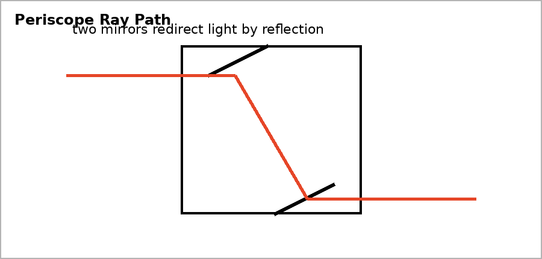

Unit 6 DOK 4.2 Design a Periscope, Projector, or Magnifier V1
Name:
Version 1
Show work and mark answers clearly.

Design a simple periscope for seeing over a wall.
- Describe the mirror arrangement.
- Explain how the law of reflection controls the light path.
- Identify one design error that would prevent it from working.
- Defend the design with a ray description.
Unit 6 DOK 4.2 Design a Periscope, Projector, or Magnifier V2
Name:
Version 2
Show work and mark answers clearly.
Design a classroom magnifier for reading small print.
- Choose the lens type.
- Explain object distance relative to focal length.
- Describe the image formed.
- Critique one possible incorrect design.
Unit 6 DOK 4.2 Design a Periscope, Projector, or Magnifier V3
Name:
Version 3
Show work and mark answers clearly.
A projector must create a large image on a screen.
- Choose the lens type.
- Explain why the image must be real.
- Describe how focusing changes the ray intersection.
- Defend your optical design.
Unit 6 DOK 4.2 Design a Periscope, Projector, or Magnifier V4
Name:
Version 4
Show work and mark answers clearly.
Design a simple telescope model using two lenses.
- State the purpose of each lens.
- Explain how light is collected and redirected.
- Identify one limitation of the model.
Unit 6 DOK 4.2 Design a Periscope, Projector, or Magnifier V5
Name:
Version 5
Show work and mark answers clearly.
A camera must focus light from a distant object onto a sensor.
- Explain the role of the lens.
- Explain why image distance matters.
- Compare the sensor image to a virtual image.
Unit 6 DOK 4.2 Design a Periscope, Projector, or Magnifier V6
Name:
Version 6
Show work and mark answers clearly.
A student proposes a periscope with one mirror only.
- Critique the design.
- Explain why two reflections are usually needed.
- Revise the design using optics principles.